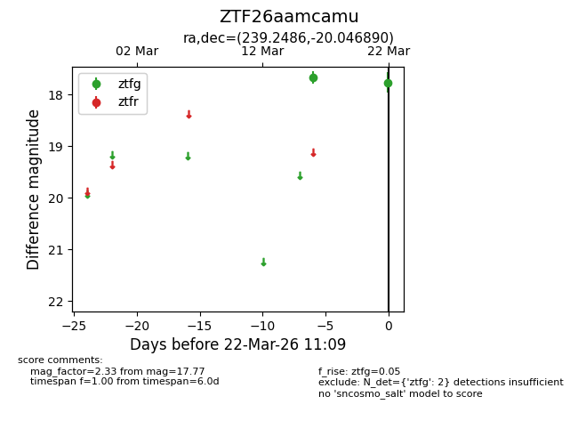
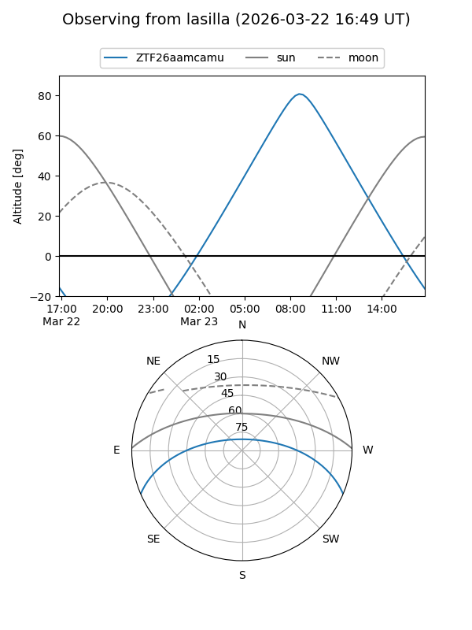
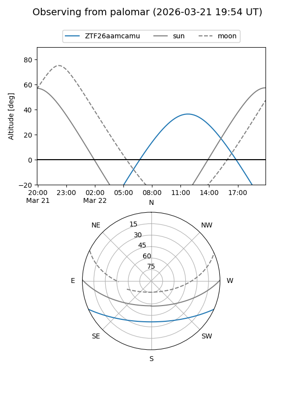

ZTF26aamcamu
Target ZTF26aamcamu at 2026-03-22 11:11
Aliases and brokers:
FINK: link
Lasair: link
ALeRCE: link
alt names
ZTF26aamcamu (ztf,fink_ztf)
Coordinates:
equatorial (ra, dec) = 239.2486,-20.04689
equatorial (HMS+DMS) = 15:56:59.67,-20:02:48.80
galactic (l, b) = (351.4899,+24.85830)
Flags:
Photometry:
last ztfg=17.77
2 ztfg detections
Lightcurve

Visibility


Additional plots